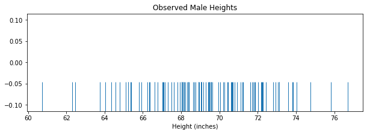
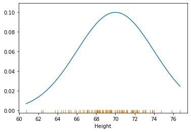
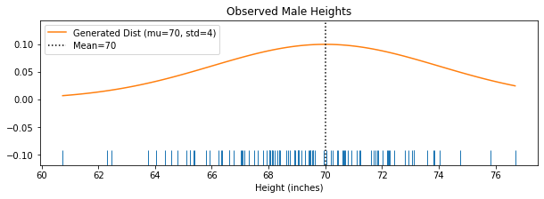
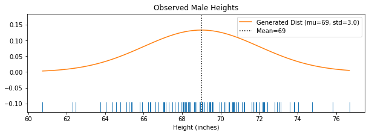

Topic 17: Bayesian Statistics#
onl01-dtsc-xt-xxxxxx
xx/xx/xxxx study group
Learning Objectives#
Review the concept of conditional probability
Learn about Bayes’ Theorem
Apply Bayes Theorem - Bayes’ Theorem Lab
Discuss maximum likelihood estimation (MLE)
Apply Maximum Likelihood Estimation using a normal distribution
Advice on Approaching This Section#
Don’t let the Monty Hall Problem lab slow you down.
Don’t fret too much about the math behind the MLE section (for now).
If you understand what we do in today’s class, that is a better starting point than the lessons
When we get to calculus & gradient descent we will come back and discuss more of the math from the lessons about MLE/MAP
Additional References#
Questions?#
Conditional Probability - Review#
Conditional probability emerges when the outcome a trial may influence the results of the upcoming trials.
The conditional probability (Probability of \(A\) given \(B\)) can be written as: $\( P (A \mid B) = \dfrac{P(A \cap B)}{P(B)}\)$
\(P(A|B)\), is the probability A given that \(B\) has just happened.
Laws & Theorems Based on Conditional Probability#
Theorem 1: Product Rule#
The intersection of events \(A\) and \(B\) can be given by
\begin{align} P(A \cap B) = P(B) P(A \mid B) = P(A) P(B \mid A) \end{align}
Theorem 2: Chain Rule AKA “General Product Rule”#
Allows calculation of any member of the join distribution of a set of random variables using only conditional probabilities.
Built on the product rule: $\(P(A \cap B) = P(A \mid B) P(B)\)$
Bayes’ Theorem#
Starts with the formula for conditional probability/likelihood:
Substitute \(P(B|A)P(A)\) for \(P(A \cap B)\) using the product rule and we get:
Bayes’ Theorem#
Note that, using Bayes theorem, you can compute conditional probabilities without explicitly needing to know \(P(A \cap B)\)!
Activity: Bayes’ Theorem - lab#
# ! pip install -U fsds
from fsds.imports import *
fsds v0.3.2 loaded. Read the docs: https://fs-ds.readthedocs.io/en/latest/
| Handle | Package | Description |
|---|---|---|
| dp | IPython.display | Display modules with helpful display and clearing commands. |
| fs | fsds | Custom data science bootcamp student package |
| mpl | matplotlib | Matplotlib's base OOP module with formatting artists |
| plt | matplotlib.pyplot | Matplotlib's matlab-like plotting module |
| np | numpy | scientific computing with Python |
| pd | pandas | High performance data structures and tools |
| sns | seaborn | High-level data visualization library based on matplotlib |
def bayes(P_a, P_b, P_b_given_a):
# Your code here
P_a_given_b =(P_b_given_a * P_a)/P_b
return P_a_given_b
Skin Cancer#
After a physical exam, a doctor observes a blemish on a client’s arm. The doctor is concerned that the blemish could be cancerous, but tells the patient to be calm and that it’s probably benign. Of those with skin cancer, 100% have such blemishes. However, 20% of those without skin cancer also have such blemishes. If 15% of the population has skin cancer, what’s the probability that this patient has skin cancer?
Hint: Be sure to calculate the overall rate of blemishes across the entire population.
Must apply the Law of Total Probability to get P_blemish
# Your code here
P_blemish_given_cancer = 1
P_blemish_given_nocancer = 0.2
P_cancer = 0.15
P_blemish = P_blemish_given_cancer*P_cancer + P_blemish_given_nocancer*(1-P_cancer)
P_cancer_given_blemishes = bayes(P_cancer,P_blemish,P_blemish_given_cancer)
P_cancer_given_blemishes
0.46875
Children (I)#
A couple has two children. the younger of which is a boy. What is the probability that they have two boys?
# Your solution P(2boys|older child is a boy)
P_2boys = 0.5*0.5
P_younger_boy = 0.5
P_older_boy_given_2boys =1
P_2boys_given_older_boy = bayes(P_2boys,P_younger_boy,P_older_boy_given_2boys)
P_2boys_given_older_boy
0.5
Children (II)#
A couple has two children, one of which is a boy. What is the probability that they have two boys?
# Your solution P(2boys|1 of 2 children is a boy)
## GG GB BB
P_2boys = 0.25
P_1boy = 0.75
P_1boy_given_2boys = 1
P_2boys_given_1boy = bayes(P_2boys, P_1boy, P_1boy_given_2boys)
P_2boys_given_1boy
0.3333333333333333
A diagnostic test#
A diagnostic test is advertised as being 99% accurate
If a patient has the disease, they will test positive 99% of the time
If they don’t have the disease, they will test negative 99% of the time
1% of all people have this disease
If a patient tests positive, what is the probability that they actually have the disease?
P_disease = 1/100
P_postive_given_disease = 99/100
P_positive_given_no_disease = 1/100
P_positive = P_postive_given_disease*P_disease + (1-P_disease)*P_positive_given_no_disease
P_disease_given_positive = bayes(P_disease,P_positive,P_postive_given_disease)
P_disease_given_positive
0.5
Maximum Likelihood Estimation#
MLE primarily deals with determining the parameters (\(\theta\)’s) that maximize the probability/liklihood of observing the data.
Parameter Inference#
If we have a number of observations for a phenomenon that we do not know the probability/parameters for, we can use the probability of seeing those observations (the likelihood) for different probabilities/parameters until we find the value for the parameter that maximizes our chances of seeing the observed data.’
MLE Assumptions#
Observations are independent
Observations are identically distributed
These assumptions are so common they have been given an abbreviation: “the i.i.d. assumption (independent and identically distributed samples)
Activity: Using MLE to find the Mean and Std for Male Height#
Use MLE to find find the mean height and standard deviation for males.
df = fs.datasets.load_height_weight()
df
| Gender | Height | Weight | |
|---|---|---|---|
| 0 | Male | 73.847017 | 241.893563 |
| 1 | Male | 68.781904 | 162.310473 |
| 2 | Male | 74.110105 | 212.740856 |
| 3 | Male | 71.730978 | 220.042470 |
| 4 | Male | 69.881796 | 206.349801 |
| ... | ... | ... | ... |
| 9995 | Female | 66.172652 | 136.777454 |
| 9996 | Female | 67.067155 | 170.867906 |
| 9997 | Female | 63.867992 | 128.475319 |
| 9998 | Female | 69.034243 | 163.852461 |
| 9999 | Female | 61.944246 | 113.649103 |
10000 rows × 3 columns
## Separate Out Males' height
df_male = df.groupby('Gender').get_group("Male")['Height']
## Take a small sample (n=100) using random_state 123
male_sample = df_male.sample(100, random_state=123)
male_sample
2648 69.569235
2456 68.035724
4557 65.102935
4884 64.585263
92 70.640530
...
1182 74.758752
1898 72.439501
2736 68.929542
1003 67.805312
3022 68.914623
Name: Height, Length: 100, dtype: float64
## Rug Plot of Male Heights Sample
fig,ax=plt.subplots(figsize=(10,3))
ax = sns.rugplot(male_sample,ax=ax,height=0.3)
ax.set(title='Observed Male Heights',
xlabel='Height (inches)')
[Text(0.5, 1.0, 'Observed Male Heights'), Text(0.5, 0, 'Height (inches)')]

Task: Use MLE to Determine the Most Likely Mean and Std of Male Height#
How can we figure out the most likely population mean and std for males?
from scipy import stats
mu=70
std=4
## Generate 100 data points in the range of male_height (xs)
xs = np.linspace(male_sample.min(),male_sample.max(),100)
## Generate a normal distribution (ys) using the xs
ys = stats.norm(loc=mu,scale=std).pdf(xs)
## PLot the male_sample rugplot with the nromal distrubition
plt.plot(xs,ys)
sns.rugplot(male_sample)
<AxesSubplot:xlabel='Height'>

def plot_male_height(male_sample, mu, std):
"""Plot a rugplot of the male_sample
vs the normal distribution defined by mu and std."""
## Plot Male Heights
fig,ax=plt.subplots(figsize=(10,3))
ax = sns.rugplot(male_sample,ax=ax,height=0.1)
ax.set(title='Observed Male Heights', xlabel='Height (inches)')
## Generate a normal distribution (ys) using the xs
xs = np.linspace(male_sample.min(),male_sample.max(),100)
pop = stats.norm(loc=mu,scale=std).pdf(xs)
ax.plot(xs,pop,label=f"Generated Dist (mu={mu}, std={std})")
ax.axvline(mu,c='k',ls=':',label=f"Mean={mu}")
ax.legend()
plot_male_height(male_sample,70,4)

The Probability Density Function for the Normal Distribution#
The probability density function equation for the normal distribution is given by the following expression:
Here,
\(\mu\) is the mean
\(\sigma\) is the standard deviation
\(\pi \approx 3.14159 \)
\( e \approx 2.71828 \)
import math
import numpy as np
def calc_likelihood(x,mu,std):
"""Write a function to calculate the expected value at
a particular point using the equation above."""
e_num = math.e**(((-1*(x-mu)**2))/(2*std**2))
denom = std * np.sqrt(2*math.pi)
return 1/denom * e_num
def calc_total_likelihood(xs,mu,std):
"""Write a function that will get the likelihood
for each x value so we can get the product of the total probability"""
likelihoods = []
for x in xs:
likelihood = calc_likelihood(x,mu, std)
likelihoods.append(likelihood)
return np.array(likelihoods).prod()
calc_total_likelihood(male_sample, 70,4)
7.123494597622488e-114
Parameter Inference#
We want to infer which of these values best matches the true Mean and Std of male height.
import itertools
theta_mus = [40,65,75,66,69,70,72, 80,91]
theta_stds = [0.5,1.0,1.5,2.0,2.5,3,3.5,4,4.5,5]
theta_params = list(itertools.product(theta_mus,theta_stds))
theta_params
[(40, 0.5),
(40, 1.0),
(40, 1.5),
(40, 2.0),
(40, 2.5),
(40, 3),
(40, 3.5),
(40, 4),
(40, 4.5),
(40, 5),
(65, 0.5),
(65, 1.0),
(65, 1.5),
(65, 2.0),
(65, 2.5),
(65, 3),
(65, 3.5),
(65, 4),
(65, 4.5),
(65, 5),
(75, 0.5),
(75, 1.0),
(75, 1.5),
(75, 2.0),
(75, 2.5),
(75, 3),
(75, 3.5),
(75, 4),
(75, 4.5),
(75, 5),
(66, 0.5),
(66, 1.0),
(66, 1.5),
(66, 2.0),
(66, 2.5),
(66, 3),
(66, 3.5),
(66, 4),
(66, 4.5),
(66, 5),
(69, 0.5),
(69, 1.0),
(69, 1.5),
(69, 2.0),
(69, 2.5),
(69, 3),
(69, 3.5),
(69, 4),
(69, 4.5),
(69, 5),
(70, 0.5),
(70, 1.0),
(70, 1.5),
(70, 2.0),
(70, 2.5),
(70, 3),
(70, 3.5),
(70, 4),
(70, 4.5),
(70, 5),
(72, 0.5),
(72, 1.0),
(72, 1.5),
(72, 2.0),
(72, 2.5),
(72, 3),
(72, 3.5),
(72, 4),
(72, 4.5),
(72, 5),
(80, 0.5),
(80, 1.0),
(80, 1.5),
(80, 2.0),
(80, 2.5),
(80, 3),
(80, 3.5),
(80, 4),
(80, 4.5),
(80, 5),
(91, 0.5),
(91, 1.0),
(91, 1.5),
(91, 2.0),
(91, 2.5),
(91, 3),
(91, 3.5),
(91, 4),
(91, 4.5),
(91, 5)]
## Calculate the most likely parameters for mu, std
compare_likelihoods = [['Mu', "Std",'Likelihood']]
## For each pair of mu,std, calculate total likelihood.
for (mu,std) in theta_params:
res = calc_total_likelihood(male_sample,mu,std)
compare_likelihoods.append([mu,std,res])
## Turn it into a df for convenience
compare = pd.DataFrame(compare_likelihoods[1:],columns=compare_likelihoods[0])
compare = compare.sort_values('Likelihood',ascending=False).reset_index(drop=True)
compare.head(10)
| Mu | Std | Likelihood | |
|---|---|---|---|
| 0 | 69 | 3.0 | 1.212437e-109 |
| 1 | 69 | 3.5 | 1.093284e-110 |
| 2 | 69 | 2.5 | 4.284359e-111 |
| 3 | 70 | 3.0 | 1.623014e-111 |
| 4 | 70 | 3.5 | 4.596252e-112 |
| 5 | 69 | 4.0 | 8.062041e-113 |
| 6 | 70 | 2.5 | 8.595695e-114 |
| 7 | 70 | 4.0 | 7.123495e-114 |
| 8 | 69 | 4.5 | 2.019352e-115 |
| 9 | 70 | 4.5 | 2.969053e-116 |
## View the 5 params with the highest likelihood
## Plot the male_sample rugplot vs mu and std with the max likelihood
plot_male_height(male_sample,69,3.0)

## Get the actual mean and std from the full population
df_male.mean(), df_male.std()
(69.02634590621741, 2.863362228660647)
Appendix#
Monotonic function#
In mathematics, a monotonic function (or monotone function) is a function between ordered sets that preserves or reverses the given order. This concept first arose in calculus, and was later generalized to the more abstract setting of order theory.
According to this theory, if you apply a monotonic function to another function, like the one you are trying to optimize above, this application will preserve the critical points (maxima in this case) of the original function. Logarithmic functions are normally used within the domain of machine learning to achieve the functionality of monotonicity. The logarithmic function is described as:
\(log_b(x)\)
where b is any number such that b > 0, b ≠ 1, and x > 0
The function is read “log base b of x”
The logarithm y is the exponent to which b must be raised to get x. The behavior of a log function can be understood from following image.

This helps you realize that log of f(θ) i.e. log(f(θ)) will have the save maxima as the likelihood function f(θ). This is better known as the log likelihood.